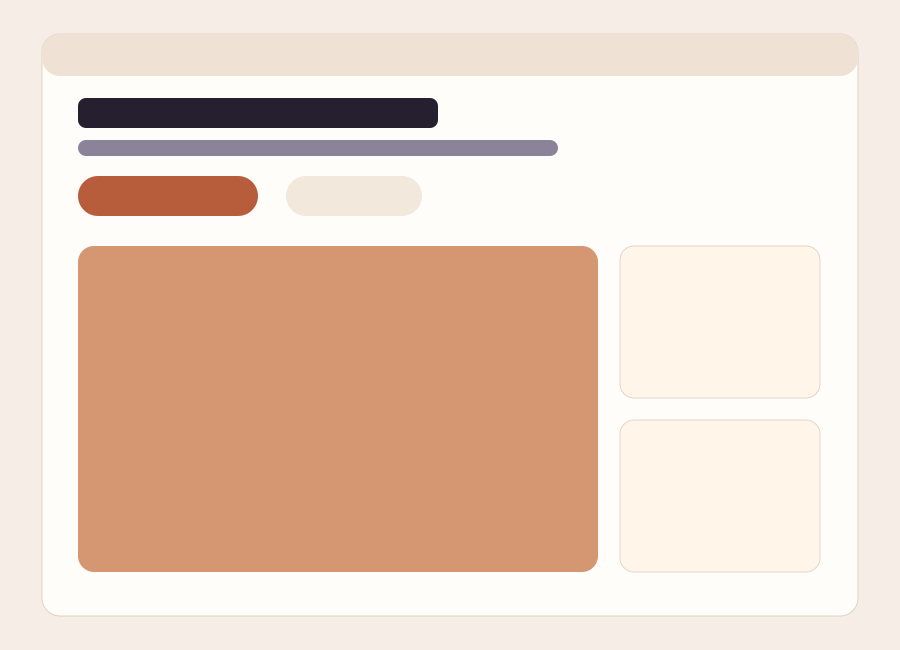

EL
Elektrische installaties
Nieuwe installaties, renovaties en uitbreidingen worden duidelijk voorgesteld.
Voordeel: klanten zien meteen welke aanpak past bij hun gebouw of project.
Interactieve demo-oplossing
Interactieve demo - Fictieve onderneming
Een sterke website helpt klanten meteen zien welke oplossingen het bedrijf biedt, hoe snel een storing wordt opgevolgd en hoe een offerte of interventie correct wordt aangevraagd.
Diensten
Nieuwe installaties, renovaties en uitbreidingen worden duidelijk voorgesteld.
Voordeel: klanten zien meteen welke aanpak past bij hun gebouw of project.
Periodiek onderhoud helpt installaties veilig, efficiënt en betrouwbaar houden.
Voordeel: minder stilstand en meer voorspelbaarheid voor de klant.
Bij een probleem krijgt de klant snel een gerichte intake en opvolging.
Voordeel: dringende meldingen verdwijnen niet in een algemene inbox.
Technische controle, rapportering en opvolging richting een duidelijke oplevering.
Voordeel: klanten krijgen meer zekerheid over kwaliteit en uitvoering.
Interventies
De klant geeft kort aan wat er aan de hand is en hoe dringend het probleem is.
De situatie, locatie en praktische details worden meteen duidelijk in kaart gebracht.
De interventie krijgt een passende timing en de klant weet wat er volgt.
Projecten

Referentie
Een overzichtelijk project met aandacht voor betrouwbaarheid, veiligheid en onderhoud.

Referentie
De klant ziet meteen hoe een probleem wordt opgevolgd en gecommuniceerd.

Referentie
Duidelijke planning en opvolging zorgen voor rust en continuïteit.
Certificaten
De relevante erkenningen en competenties staan helder gebundeld op één plek.
Belangrijke veiligheidsinformatie is snel terug te vinden voor klanten en partners.
Attesten, fiches en opleverdocumenten worden overzichtelijk aangeboden.
Offerte aanvragen
Voordeel: sneller een relevante prijsinschatting met minder extra vragen.
De bezoeker weet meteen hoe hij een offerte aanvraagt en welke reactie hij mag verwachten.
Storingsdienst
In een echt klantproject bevat dit blok een versnelde intake met prioriteit, zodat kritieke aanvragen meteen naar de juiste interventiestroom gaan.
FAQ
De bezoeker weet meteen dat dringende meldingen prioriteit krijgen en dat normale aanvragen gestructureerd worden opgevolgd.
Ja. Diensten, interventies, projecten en contactmomenten worden afgestemd op het type bedrijf en de manier van werken.
De certificaten en documenten zijn overzichtelijk gebundeld zodat klanten snel zien dat het bedrijf professioneel werkt.